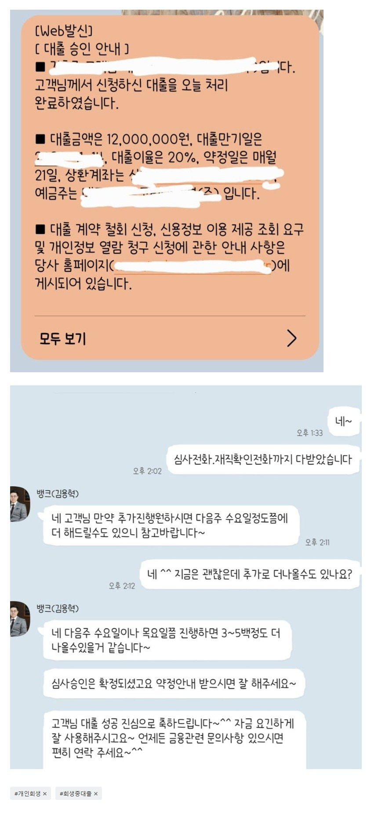

[개인회생자대출 ] 개인회생자대출 신청당일승인입금!! 역시 뱅크앤론입니다!(김용혁 이사님, 이현섭 과장님 감사드려요^^)
-재회생 36회중 21회차 미납5회 월변제금72만원
-직장인 4대보험가입 12년재직
-월소득 290만원 실수령
-기대출 없음 미납금 360정리 + 여유자금 840만원
안녕하세요 저는 십년정도 전부터 급하게 돈이 필요하게되면 뱅크앤론을 이용해왔었습니다. 이번에도 역시 돈이 필요해지니 자연스럽게 카페에 오게되더라구요. 개인회생을 23년말에 다시 하게되면서 대구지법이 인가가 너무오래걸려 개인회생인가받고 변제금을 모아놨어도 금액이 커지니 한번에 정리가 안되서 미납금이 5회정도 계속유지가되고 불안하기도하고 여유자금도 좀 필요해저서 오늘아침 문의글남겼습니다. 가능하다는 댓글확인후 카톡으로 안내받고 오전중 서류준비다해서 오후에 승인받고 입금까지 받았네요
김용혁 이사님, 이현섭 과장님 두분 일처리가 너무빠르세요 감동...ㅠ
항상 급할때면 찾는 뱅크앤론 이번에도 역시 실망하지않았어요 믿고찾는 뱅크앤론입니다. 덕분에 미납금정리에 여유자금까지 챙겼네요.
초조할틈없이 빠른상담 빠른처리 정말 감사합니다.

https://cafe.naver.com/cityman88/309428